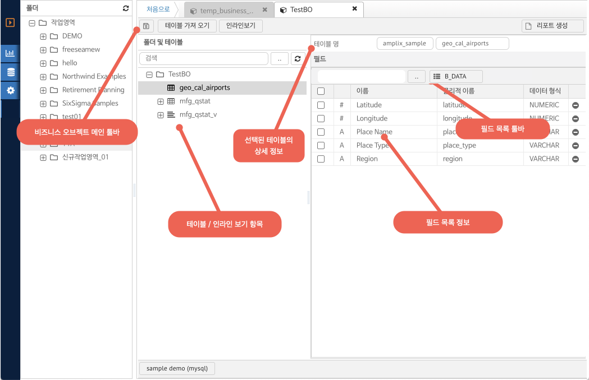

네비게이션
6.2. 비즈니스 오브젝트 화면 레이아웃
비즈니스 오브젝트는 데이터베이스의 메타 정보를 가져와 사용자가 리포트에서 분석 항목을 제공하는 기능을 제공한다.
비즈니스 오브젝트 화면 레이아웃 구성은 아래와 같다.

(그림 : 비즈니스 오브젝트 화면 레이아웃)
비즈니스 오브젝트 메인 툴바
저장: 비즈니스 오브젝트의 변경 사항을 저장한다.
테이블 가져오기 : 데이터베이스의 테이블, 물리적 뷰 를 비즈니스 오브젝트에 등록 하는 기능을 제공한다.
인라인 보기 : 사용자 정의 SQL 을 입력하여 SQL 의 결과값과 필드를 비즈니스 오브젝트에 등록하는 기능을 제공한다.
리포트 보기 : 비즈니스 오브젝트를 사용하여 리포트를 생성하는 단축버튼의 기능을 제공한다.
폴더 및 테이블 (테이블 / 인라인 보기 항목)
데이터베이스에서 가져온 테이블 정보 및 인라인 정의한 항목의 목록을 나타낸다.
항목을 클릭하면 항목에 대한 상세 정보가 필드 목록 정보 영역에 표시된다.
필드 목록 정보
선택된 테이블 / 인라인 뷰에 대한 상세 정보, 해당 내부 필드의 목록을 보여 준다.
테이블 명 : 현재 선택된 테이블의 이름 및 스키마 명칭을 보여 준다. (스키마명 + 테이블 명)
필드 목록 정보의 그리드 내용은 아래와 같다.
- 체크 버튼 선택 : 그리드에서 항목을 선택한다.
- 아이콘 (#) : 숫자유형의 컬럼인 경우 표시된다.
- 아이콘 (A) : 문자 유형의 컬럼인 경우 표시된다.
- 아이콘 (달력) : 날짜 유형의 컬럼인 경우 표시된다.
- 이름 : 해당 필드가 리포트에서 표시되는 이름을 나타낸다.
- 물리적 이름 : 해당 필드의 실제 데이터베이스에서의 이름을 나타낸다.
- 데이터 형식 : 해당 컬럼의 데이터베이스에서의 형식을 나타낸다.
- 삭제 버튼 : 해당 컬럼을 삭제 (데이터베이스 삭제가 아님) 하여 리포트 생성시 사용자에게 보이지 않도록 하는 기능
필드 목록 툴바
필드에 대한 변경 사항을 툴바 옵션 항목들을 나타낸다.
- 검색 : 필드의 이름에 대해 키워드 입력된 값이 들어가는 내용만 필터링 하여 보여 준다.
- 데이터 보기 : 필드의 데이터를 100건 만 미리보기 형식으로 보여 준다.